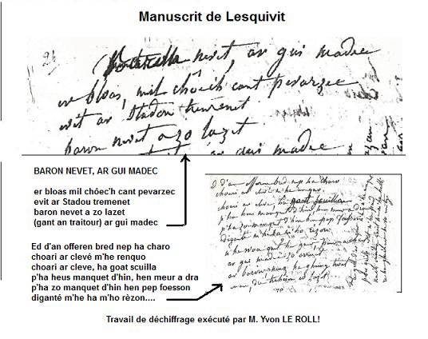

BARON NEVET HAG AR GIMADEK.
Le Baron de Nevet et Le Guémadeuc
Texte recueilli par Mme de Saint-Prix (1789 - 1869)
Manuscrit de Lesquivit (N°2, folios 14v-18r) conservé à l'abbaye de LandévennecDéchiffré par M. Yvon LE ROL et publié dans sa thèse de doctorat
(en breton!) soutenue le 5 juillet 2013 à l'univerité de Rennes 2.
"La langue des gwerzioù à travers l'étude des manuscrits"

Ton
("Ar Vinorezig, 3ème version" recueillie par Maurice Duhamel auprès de Menguy et Léon de Carhaix et publiée dans "Musiques Bretonnes" en 1913)
(Fond sonore de la page, arrangement Chr. Souchon, 2012)
|
BARON NEVET HAG AR GIMADEK. [1] [2] 1. Er bloaz mil c'hwec'h kant pevarzek, Evit ar Stadoù tremenet : Baron Nevet zo bet lazhet Gant an tretour Ar Gimadek 2. Baron An Nevet a lare D'ar Gimadek, un deiz a oe : Deomp-ni hon daou dan oferenn, Araok "skoulm an akuilhetenn"! [3] 3. - Kit d'an oferenn pa garfet Kar evidon-me ne z'in ket An hini c'hello a doublo ha c'houneo: 'N em anavezhañ a reomp pell-zo! [4] 4. - Feteiz d'an oferenn n'ez an: Pe vin lazhet, pe n'he lazhañ, Baron Nevet, mar he kavan, He lamin e vuez digantañ. - [5] 5. Ar Varonez e-kuzh a lare D'he flac'h-a-gambr deus a beure: Jenovefa, mar am c'harit, Da gavout ma fried ez eot. 6. D'ho mestr ar Baron e larot, Rag c'hwi gantañ a zo karet, Moned gantañ d'an oferenn-bred Kar, me gred sur, eo koleret. 7. - Ma mestr ar Baron, me ho ped Da vont ganin d'an ofrenn-bred! - Kit d'an ofrenn neb a garo! C'hoariñ ar kleze me renko, 8. C'hoariñ ar kleze, gwad skuilhañ! P'o-deus mañket din e meur-a-dra, Pa zo mañket din e pep feson, Diganto me am-bo rezon! - 9. Ne oa ket e ger peurechuet: Ar Guimadek zo erruet. Ar Baron 'n eus he gein troet. Eno, dre draizon, zo lazhet! - 10. Baron an Nevet a lare D'e palafrigner pa gouezhe: - Erwanig Beleg, me ho ped Da nac'h ma marv d'am pried. [6] 10 bis. Te yel' d'ar ger, me n'an in ket. Pebezh keloù 'vit ma pried! Nac'h outi keit ha ma c'hali Re a glac'har e vo en ti! 11. Larit e vin aet da Bariz, Da saludiñ ar roue Loeiz, Choazet ganin un inkane, Ma hini oa he c'halon re ge. [7] 12. Ar Varones a lavare En he gwele pa na gouske: Jenovefa, sav alese, War dor ar porzh skeiñ a reer; 13. 'Michañs eo Gwilhaoù ar Beleg Erru er ger gant e gezeg. - Ar varonez a zo savet Da c'hoût neventi he fried. 14. Ar varonez a c'houlenne Digant Jenovefa an deiz-se: Petra zo nevez en ti-mañ, E gren va c'hambr dindanin-me e-giz-mañ? 15. - Ar palafrigner o toned Gant e garos hag e roñsed; Ma mestr ar baron n'eo ket deuet. - Pelec'h eñ c'hal bezañ chomet? 16. Ar Varonez a diskennas Ar viñch d'an traoñ ha rankoñtras; Ar paj bihan a oa fourmet O soñjal petra lavared. 17. Paj bihan, pe drouz am-eus klevet A lak ma c'halon glac'haret? - Erwan Beleg, gant e roñsed. Ma mestr e beaj a zo aet. 18. - Ma paj kaez, ma pajik bihan, Anzav ar gwirionez ha krenn! Me rayo dit un habit nevez, Mar larez din ar gwirionez. 19. - Ma mestr zo aet da Bariz, Da weled ar roue Loeiz. Prenet zo gantañ un inkane Aoñ en-doa e hini hen diskarje. 20. Ar varonez, kerkent zo aet. Er marchosi eo diskennet: Erwan Beleg, din-me larit, Ho mestr ar Baron, p'lec'h eo chomet? 21. - Ma mestr zo aet da Bariz Da saludiñ ar roue Loeiz A c'houlenn evit an arme Da lakaat c'hoazh kezeg nevez. [8] 22. Erwan Beleg, anzav ar gwirionez! Me preno dit un habit nevez A vo galoñset en arc"hant A dere diouzhit, ' poud den vailhant! 23. - O ma Doue, petra vo graet? Herzel da gouelañ n'hellan ket! Ma mestr ar baron zo lazhet Gant an trêtour ar Gimadek! 24. Ar mestr ar gwellañ 'm-eus kollet Mez ur map dezhañ zo chomet... - Ar varonez p'he-deus klevet War an douar ez eo semplet. 25. Teir wech d'an douar zo kouezhet He map penn-her 'n eus he gorret: - Ma mamm itron, 'n em kourajit! C'hwi vo koñduet 'vel bepred! 26. Ha me, pa vin erru en oad M'em-bo din ha deoc'h revañj ma zad! Me a jomo ganeoc'h atav Ken m'am-bo tapet bloavezhoù. 27. Mar vevan d'an oad ha paotr mad M'am-bo, vit sur, revañj ma zad! Ar Gimadek ha tud e di Un deiz bennak gomzo ouzhin! - 28. Ar Baron yaouank a lare En oad a zeiteg bloaz pa kroge: Lakit ar c'hezeg er marchosi. Roit boued mat de'hi da zebriñ! 29. Gwisket m'hini e c'hanari: Ez an da weled Rosmadek d'e ti! En em preparomp d'ar c'hombat Da zeskiñ dezhañ ez on paotr mad! 30. Ar varonez, phe deus klevet He daoulagad en dour zo beuzet. - Kañv am-eus bet o koll ho tad Mez mui am-bo, o koll ma map! 31. - Tavit ma mamm! Na gouelit ket! Ur mabig mad, ho-peus savet Hag ho savo, pa viot kouezhet Koulz e kleved, hag e yeched. - 32. Ar baron bihan a lare Ti ar Gimadek, pa errue: - Bonjour dan dud zo en ti-mañ! Ar Gimadek pelech ema? 33. Ar gouarnerez a respontas Dar baron yaouank phen gwelas, Emezi: - Er sal vras, o leinañ. Kompagnunezh a zo gantañ. 34. Ar Gimadek, p'e-neus klevet E penn er prenestr 'n-eus lakaet - It-c'hwi dar ger, Baron, ma map, Ken e vefet erru en oad! 35. Gortoz n'e ve'es erru tregont vloaz Da ober ouzhin ur kombat Rag ur truez bras e gavan Dez lemel diwar ar bed-mañ. 36. Deuet out da choulenn revanch d'az tad: Re yaouank ez out c'hoazh, Baron ma mab! - Ar baron yaouank, pa her glevas, E treid er pave a skoas: 37. - Deus-te e-maez demeus da di, Pe me lakao an tan de deviñ! Pouez a zo em dorn, den em difenn: Erru eo da gwall-planedenn! - 38.Ar Gimadek pen-eus klevet, Gant ar viñs dan traoñ eo diskennet. Mes her pignat ne rayo quet: Ar Gimadek zo diskarret. [9] 39. A-benn un hanter eur goude, E oa klevet keloù nevez: E oa lazhet Ar Gimadek Gant map penn-her Baron Nevet! 40. - Ivon Bellec kerzh-te dhar ger Da gas ar keloù dar maner Mar lez Doue ganin yec'hed E erruin e Paris, kent kousked! 41. Pa tremene ar baron yaouank er ru E troe an noblañs a bep tu. Ar komun a droe ivez Dre ma oa mad, deus e gleze. 42. E-barzh ar palez p'eñ antreas, Ar roue hag har rouanez e saludas. - Pe sort neventi ho-peus bet P'oc'h deuet da c'hwezeg bloaz dhon gueled? 43. - Er bloavezh mil c'hwech kant ha pevarsek, Evit ar Stadoù tremenet, Ma tad ar Baron zo bet lazhet Dre dretourezh ar Gimadek! [10] 44. Evel ma 'z on erru en oad Me am-eus bet revañch ma zad: Ar Gimadek am-eus galvet Ha dirak test, am-eus hen lazhet. 45. - Just e oa deoch, Baron Nevet, Klask ar revañch deus an torfet. Mad eo ho kleze, e-barzh er kombat. Ar Gimadek oa ur paotr mad. 46. Me skrivo deoch war paper glaz [11] Gallout bale evel ur gwaz. Ha mar teu den dho atakiñ, E vezo graët he punisiñ. - 47. Saludet en-eus ar roue, Kemeret en-eus e koñje. E-barzh er ger, pa'z eo erruet, En divrech he mamm, en-eus lammet. 48. - Tavit ma mamm, na gouelit ket! D'ar vro ho pugel zo retornet. Setu amañ kleze ma zad. E revañch em-eus bet er kombat. 49. Setu aman edit ar roue Evel ur gwaz e c'hallan bale: Mar teufe den, dam atakiñ, Souden vo graet he punisiñ. - Transcription KLT Christian Souchon |
LE BARON DE NEVET ET GUEMADEUC [1] [2] 1. Mil six cent quatorze en Bretagne Fut l'année des derniers Etats. Guémadeuc le traître avec hargne Tua Nevet cette année-là! 2. Le baron de Nevet s'adresse Ce jour fatal à Guémadeuc, : Allons donc ensemble à la messe Pour nous réconcilier: c'est mieux! [3] 3. - Allez-y si cela vous chante! Quant à moi je n'en ferai rien. Je crains quelque ruse méchante! Tous deux nous nous connaissons bien! - [4] 4. - Je sais trop quel dessein il couve: Ou bien il meurt, ou moi j'expie. Ce Nevet, si je le retrouve, Il me le paiera de sa vie. - [5] 5. Or la baronne qui se lève En secret à sa bonne a dit: Faites-moi plaisir, Geneviève, Allez donc trouver mon mari! 6. Et vous direz à votre maître Qui pour vous a de l'amitié, De vous suivre à la messe, aux vêpres: Il est en rage, je le sais. 7. - Monsieur le Baron, je vous prie D'aller à la messe avec moi L'épée me démange, ma mie! Aille à la messe qui voudra! 8. Ma lame a soif de sang qui coule! On n'a point d'égards pour mon rang, Plus bas que terre l'on me roule? Vous m'en rendrez raison, manants! - 9. Voilà que Guémadeuc approche Quand ce discours allait bon train Et dans le dos le traître embroche Le baron en un tournemain! 10. Nevet en s'effondrant fait signe Alors à son palefrenier: - Bellec, écoute ma consigne: Ma femme, il faut la ménager. [6] 10 bis. Comment lui dire la nouvelle? Retourne à la maison sans moi! Ce deuil est bien trop lourd pour elle: Ne dis rien tant que tu pourras! 11. Dis que vers Paris je chevauche, Convoqué par le roi tantôt Que j'ai pris le cheval d'un coche Le mien folâtrait beaucoup trop. - [7] 12. La baronne en son lit s'agite Après une nuit sans sommeil: - Geneviève, levez-vous vite Je crois que l'on frappe au portail. 13. C'est sans doute Bellec, dit-elle, Qui revient avec les chevaux. - Aurait-on enfin des nouvelles? Elle sort du lit aussitôt. 14. Le cur battant elle demande A Geneviève qui revient: - Que ce passe-t-il pour que tremblent Les murs de ma chambre à ce point? 15. - Avec chevaux et équipage Votre palefrenier est là Et il a pour vous un message. - Monsieur le Baron n'y est pas? - 16. Dans l'escalier elle s'enfonce: Elle croise un page que l'on Vient d'instruire des réponses Qu'il devrait faire à ses questions. 17. - Est-ce d'un malheur le présage? Quel est donc ce bruit de sabots? - Le maître fait un long voyage... C'est Bellec avec les chevaux. 18. A cette affirmation sans preuve Je préfère la vérité Tu voulais une livrée neuve? Dis-moi tout, sans rien me cacher! 19. - C'est le roi Louis qui le convoque: Le maître est parti pour Paris. Quant à son cheval, s'il le troque C'est que l'autre était insoumis. - 20. Elle descend à l'écurie Voyant bien qu'il n'avouerait pas. - Yves Bellec, dis, je te prie, Mon mari n'est pas là. Pourquoi? 21. - A Paris il a dû se rendre A l'audience du roi Louis Qui pour l'armée veut qu'on lui vende De nouveaux chevaux à tout prix. [8] 22. - Je crois, Bellec, que je suis veuve! Toute ornée de gallons d'argent Tu voulais une livrée neuve? Pour la mériter, sois vaillant! 23. - Comment taire encore ce drame? Mes larmes coulent malgré moi! Mon maître vient de rendre l'âme En traître, Guémadeuc le tua. 24. Meilleur des maîtres, il me reste Encore, après ta mort, ton fils. - Entendant ce discours funeste La pauvre dame s'évanouit. 25. Par trois fois elle tombe à terre Relevée par son jeune fils - Ne perdez point courage, mère! Rien n'est changé pour vous ici. 26. Quant à moi, quand j'en aurai l'âge, Je saurai mon père venger. Ce Guémadeuc et son lignage Ils trouveront à qui parler. 27. Pourvu que Dieu me prête vie, Tous les deux, nous serons vengés. Mais jusque là, mère chérie, Près de vous je demeurerai. - 28. Au fil des jours coule la vie. Il dit le jour qu'il eut seize ans: Je veux qu'on laisse à l'écurie Et qu'on nourrisse la jument! 29. Mettez son caparaçon jaune. Je vais voir Guémadeuc chez lui! Et me mesurer à son aune. Je vais lui montrer qui je suis! 30. La pauvre mère fond en larmes En voyant ces préparatifs. - Perdre ton père fut un drame. Qu'en est-il, si je perds mon fils? 31. - Ces pleurs ne vous sont d'aucune aide! Vous fîtes un homme de moi. A vos maux je porte remède: Renom, santé tout à la fois. - 32. Et le jeune baron demande En arrivant chez Guémadeuc: - Ma question ne doit pas surprendre: Où donc est le maître des lieux? 33. Se montre alors une harpie. Elle voit le jeune baron, Et dit: - En bonne compagnie, Monsieur déjeune au grand salon. - 34. Guémadeuc ouvre la fenêtre Et crie sur un ton méprisant - Rentrez chez vous, mon petit maître, Revenez quand vous serez grand! 35. Quand vous aurez trente ans, sans doute Nous aurons un duel s'il le faut. Mais pour l'instant il me dégoûte De vous ôter la vie si tôt. 36. Vous venez pour venger un père: Il est bien trop tôt, croyez-moi! - Le jeune homme met pied à terre, Et donne à son tour de la voix: 37. - Sors de ce logis sans attendre, Ou j'y mets le feu, sur l'instant! J'ai la force de me défendre. Affronte ton sort à présent! - 38. Guémadeuc pâlit sous l'outrage, Descend en hâte l'escalier. Ce qu'il fit là ne fut point sage: Il ne devait plus remonter. [9] 39. Et au bout d'un quart d'heure à peine, La nouvelle partout courait: Guémadeuc avait rendu l'âme Tué par l'héritier des Nevet! 40. - Yvon Bellec, allons, en marche! Portez la nouvelle au manoir! Avec l'aide de Dieu, je tâche D'être à Paris avant ce soir! - 41. Dans les rues, il voit la noblesse Le couver de regards flatteurs. Le peuple aussi, car le précède Sa renommée de fin bretteur. 42. Et quand au Louvre il se présente, Reine et roi le saluent bien bas. - Quelle est donc l'affaire pressante Qu'à seize ans l'on soumet au roi? 43. - Mil six cent quatorze en Bretagne Vit se réunir les Etats. Guémadeuc le traître avec hargne A tué mon père ce jour-là! [10] 44. Le temps aidant, bientôt j'eus l'âge De laver cet affront passé: Guémadeuc connut mon courage Et devant témoins je l'ai tué. 45. - Baron de Nevet il est juste De venger un tort qu'on subit. Vous êtes une fine lame Car Guémadeuc l'était aussi. 46. Sur ce papier bleu je délivre [11] Un sauf-conduit à votre nom. A votre vie quiconque attente S'expose à ma punition. - 47. Il a salué le monarque, Gracieusement a pris congé. Le voici bientôt en Bretagne Où sa mère émue l'attendait. 48. - Ma mère, retenez vos larmes! Votre fils revient au pays. De mon père j'avais pris l'arme Qui pour le venger m'a servi. 49. Le roi m'a donné ce diplôme: Je suis libre d'aller partout Celui qui m'attaque est un homme Qui s'expose au royal courroux. - Traduction Christian Souchon (c) 2013. |
BARON NEVET AND GUEMADEUC [1] [2] 1. In sixteen hundred and fourteen The States of Brittany last met. The traitor Guémadeuc has slain Back-stabbing Baron de Nevet. 2. The Baron de Nevet addressed De Guémadeuc early that day: - Let's go to mass, the two of us, Then reconcile: it's the best way. [3] 3. - Go you with whoever you like! I don't find it a fitting spot! Both of us master double strike. We know each other, do we not? [4] 4. - I certainly won't go to mass: Either I'm killed or I kill him. If across Nevet's way I pass I'll take his life and I shall win. - [5] 5. The baroness in the morning, Whispered in her chambermaid's ear. - Since my husband took a liking To you, Genevieve, my dear, 6. You'll go to him and induce him To repair with you to high-mass If he does allow for this whim, His present wrath is sure to pass. 7. - O My Lord Baron, if you please, Accompany me to high-mass! - In church my mind won't feel at ease In a mood for duelling, my lass, 8. For duelling and shedding the blood Of one who humiliated me, Of one who dragged me through the mud. I'll wield my sword upon that plea. 9. His peroration was adjourned, For Guémadeuc sneaked near slowly. De Nevet who had his back turned Was stabbed by him traitorously. 10 a. Baron De Nevet as he fell, Dying to his ostler could say: - Yvon Le Bellec, listen well, Don't tell my wife I passed away. [6] 10 b. Go home and leave me here to die. How to break this news to my wife? O'er my death she will cry and sigh. Delay telling I lost my life! 11. Tell her that I'm gone to Paris, And that I bought a new charger To compliment our king Louis, Since too playful was the former. - [7] 12. The Baroness sat up in bed After a long and sleepless night: - Genevieve, get up, she said Someone knocks. It gave me a fright 13. It's Willy Bellec with horses Who is coming home, I suppose. Now a sad foreboding forces Me out of my bed. - And she rose. 14. The baroness asked her maid Genevieve after a while: - What is going on in the shed? Such a noise must be heard for miles. 15. - It is the ostler coming in With horses and with the carriage. The Lord Baron is not with him. - Where is he? God give me courage! - 16. The Baroness when she heard it Descended the spiral stairway. Her pageboy she encountered Who was briefed on what he would say. 17. - My boy, tell me, what was that din? That caused to throb my poor heart! - Bellec with his horses coming, But my master had to depart. 18. - My pageboy, my little pageboy Avow the truth, from end to end! A new livery you shall enjoy If you tell me the truth, my friend. 19. - To Paris my master has gone And he has bought a new charger When he was summoned by the Crown. For too playful was the former. - 20. The Baroness without a word Rushed down to the stable quickly. - Yvon Bellec, Where is your lord Where is my husband, please, tell me!. 21. - The lord Baron rode to Paris He had to leave by King's order Who asked, to provide the army, Riding horses to deliver. [8] 22. - No, the truth should not be betrayed! Be frank! I'll buy a new garment For you, adorned with silver braid. Courage! Of truth it's the moment! 23. - Alas, keep silent I would fain! Hardly can I hold in my tears. My Lord is dead. My Lord was slain By Guémadeuc, one of his peers! - 24. The best of all masters I miss. But there's an avenger in store... - The Baroness when she heard this Swooned and she fell upon the floor! 25. Three times she swooned, on the ground fell Three times her young son helped her up. - My dear mother don't cry, don't yell. Time shall drain sorrow from the cup. 26. I shall, when I've advanced in age, Avenge my sire on your behalf. Till then I'll thrive to assuage Your pain if I live long enough. 27. When I feel old enough and strong And ready for the bloody fray, I swear to send where they belong Guémadeuc and his kin away. 28. The boy was ready to the test When his sixteenth year was over: - My mare in the stable shall rest Today, with plenty of fodder. 29. A caparison on her back, The bright yellow one, you shall lay! For I was not put off the track I'll ride to Guémadeuc's today.- 30. The baroness, when he said so, Came. Her eyes were brimming with tears. - Husband's loss caused me great sorrow. Shall I lose my son in your years? 31. - Be quiet mother, do not weep! The boy you raised is in good health: Helped you up when waters were deep, Cared for your repute and your wealth. - 32. The young Baron at Guémadeuc's When he turned up, wielding his sword, Cried: - Good day to all in this house! Where is De Guémadeuc, the lord? - 33. Now a female housekeeper loomed Alerted by the stripling's cry: - My lord is in the sitting room He's dining with his guests. Goodbye! 34. Guémadeuc's head appeared at last At the window to assuage Him: - Baron, return home and fast, Don't come back till you are of age! 35. Wait till you are thirty or more You may then have a duel with me, Till then I would be distressed sore To kill you, young man, unfairly. 36. You came your father to avenge, Did you not? It is too early! - Nevet dismounted to challenge More urgently his enemy. 37. - Now, coward, get out of your den Or I shall put your house on fire! Fate is calling on you again My arm is strong: you roused my ire! 38. Guémadeuc who now took offence Rushed down the spiral stairwell. Too great was his self-confidence: It's for him that they toll the knell. [9] 39. Hardly half an hour later on Everywhere the news had spread. De Guémadeuc with the Baron Nevet had a duel and was dead. 40. - Yvon Bellec, you shall return Home and tell them how I did fight. If God my prayer does not spurn I'll be in Paris before night. - 41. Now the Baron stalks down the street, Noblemen give backward glances. Commoners also and they greet: - A fearsome man when he fences! - 42. He entered the House of the King. To see him King and Queen were glad: - It must be a right urgent thing That brought here a sixteen year lad! 43. - In sixteen hundred and fourteen When the States of Brittany met. My father the Baron was slain Traitorously by Guémadeuc. [10] 44. Now I waited to take revenge. But for no man wait time and tide. De Guémadeuc I did challenge: In front of witnesses he died. 45. - It was your right, Baron Nevet, That you took revenge on a crime. You had to take up the gauntlet. Your fencing proved to be sublime. 46. I'll write for you on paper blue [11] A safe-conduct before you go. Whoever bothers you is due The rigour of the law to know. 47. To Queen and King he said adieu. Nobody did him any harm. Back home he rushed in and he threw Himself into his mother's arms: 48. - Don't cry, mother, all is restored! Your son has returned home safely! And look, here is my father's sword Cleansed in the traitor's blood fairly! 49. This safe-conduct the king gave me That all everywhere I might go. Whoever annoys me will be Most harshly punished by the law. Translated by Christian Souchon (c) 2013. |
NOTES
|
[1] Comme indiqué en en-tête ce texte provient de manuscrits rédigés par Emilie-Barbe de Saint-Prix née Guitton (1789 - 1869) résidant à Ploujean qui collectionna les chants populaires bas-bretons de la région de Callac, aux environs de 1820. Une grande partie de ses manuscrits se retrouvent chez d'autres collecteurs (Penguern, La Villemarqué, etc.) Ce chant fait partie des deux manuscrits dits "de Lesquivit" conservés à l'abbaye de Landévennec. Monsieur Yvon LE ROL y a eu accès, les a déchiffrés et étudiés du point de vue de la dialectologie, dans le cadre de sa thèse de doctorat en breton, qu'il a mise en ligne en juillet 2013. [2] La photo ci-dessus donne une idée de la difficulté de l'exercice: le titre lui même pose problème: On y voit le mot "Feuntenella", surchargé par le mot "Baron". Il est de fait que cette histoire par un épisode au moins (visite au roi et à la reine, étonnement des Parisiens) rappelle la gwerz de La Fontenelle. La scène du réveil de la baronne (str. 14 en particulier) se retrouve dans Merlin Barde. Les tentatives à la demande de l'intéressé de cacher son décès à sa femme sont des réminiscences de Sire Nann. Cependant c'est surtout avec la gwerz Le seigneur de Rosmadec et sa variante Rosmadec et le Baron Huet, collectées par Luzel en Trégor (Trégrom en 1854 et Keramborgne en 1847) et publiées dans ses "Gwerzioù Breiz Izel", tome I, pages 367 à 382, en 1867 qu'il convient de rapprocher le présent morceau. A tel point qu'au couplet 29 on lit "rosmadec" au lieu de "guimadec" partout ailleurs (M. Le Rol ne le signale pas: est-ce une erreur de frappe?). Luzel a donné des traductions de ces textes dans le cadre de l'enquête du ministre Fortoul intitulées "La vengeance du jeune baron" et "Le petit baron et Rosmadec". Le présent texte du manuscrit de Lesquivit se retrouve transcrit avec le même titre sur un manuscrit de Jérôme Ollivier (987, p.28-35) et d'Yves le Dibarder (cahier 1, p. 53-57, d'après Ollivier) Enfin d'autres versions existent dans les manuscrits de de Penguern sous le titre "Baron Yvet" (Ms 93 pp. 97-99 publié dans "Gwerin 9", p. 145 et MS 95, pp 204-214). [3] Strophe 2: "skoulm an akuilhetenn" (cf. "Héloïse et Abélard") traduit le français "nouer l'aiguillette", pratique de sorcellerie visant à rendre un homme impuissant! (Les aiguillettes étaient les lacets à embouts métalliques qui fixaient les chausses au pourpoint). Contrairement à M. Le Rol, qui traduit ce vers par "avant de nous battre en duel" et se demande, dans une note s'il ne sagirait pas d'une erreur ("ur fazi a vefe amañ?"), on peut penser que cette façon spirituelle de dire "avant de nous réconcilier" a été choisie par l'auteur, qui fait preuve d'un indéniable talent littéraire (cf. notes 5 et 9), en connaissance de cause. Le dictionnaire du Père Grégoire (1732), auquel M. Le Fol renvoie, traduit les opérations inverses, "défier en duel" par "gervel da droc'hañ an akuilhetenn" (appeler à trancher l'aiguillette) et "se battre en duel" par "troc'hañ an akuilhetenn"! [4] Strophe 3: "An hini c'hello he doublo ha c'houneo". M. Le Rol traduit cette phrase mystérieuse par un non moins mystérieux "Celui qui pourra le doubler, gagnera". La phrase correspondante dans la version "Huet" de Luzel est "An neb a gollo a gollo, Neb a choneo, choneo" qui est traduite par "Celui qui perdra, perdra, Et celui qui gagnera, gagnera". Le même dictionnaire du père Grégoire connaît le sens (aujourd'hui argotique) du mot "doubler": "attraper celui qui voulait tromper" et le traduit par les verbes "tizhout", "pakañ" et "trec"hiñ" (atteindre, saisir, vaincre). On doit sans doute comprendre: "celui qui le pourra, 'doublera' l'autre et le vaincra". [5] La strophe 4 est un aparté de Guémadeuc. Comme on le verra plus loin (note 9), on peut penser au Cid de Corneille, acte I, scène III à propos de cette tentative de conciliation avortée (strophes 2 à 4): Don Diègue ne propose pas au comte qu'ils aillent ensemble à la messe, mais : Joignons d'un sacré nud ma maison à la vôtre : vous n'avez qu'une fille, et moi je n'ai qu'un fils ; Leur hymen nous peut rendre à jamais plus qu'amis : Faites-nous cette grâce, et l'acceptez pour gendre. [6] Strophe 10: Si les noms des protagonistes sont estropiés celui du palefrenier "Bellec" se retrouve tel quel chez Luzel (mais "Yves", en breton tantôt "Erwan", tantôt "Ivon", y devient "Guillaume", comme, d'ailleurs, à la strophe 13 du présent poème: "Gwilhaou"!). [7] Strophe 11: Il s'agit d'expliquer à la baronne pourquoi Bellec revient avec le cheval sans son cavalier. [8] La strophe 21 a trait au service de la remonte assuré par les dépôts et les annexes de remonte où étaient conservés les chevaux de moins de cinq ans avant d'être livrés à l'armée. Certains de ces établissements, tels que celui dont de Nevet devait avoir la charge, étaient effectivement rattachés directement à l'inspection générale des remontes, tandis que les autres regroupés en circonscriptions étaient commandés par un colonel. [9] Les strophes 34 à 38, elles aussi, rappellent étrangement un passage fameux du Cid de Corneille qui fut donné pour la première fois en janvier 1637! L'auteur de cette pièce si bien construite n'était certainement pas un illettré. Le Comte dit à Rodrigue à l'acte II, scène II: Trop peu d'honneur pour moi suivrait cette victoire : À vaincre sans péril, on triomphe sans gloire. On te croirait toujours abattu sans effort ; Et j'aurais seulement le regret de ta mort. Par ailleurs, le rôle d'intermédiaires confié à Geneviève, à Bellec et au page fait penser aux soubrettes et aux laquais des comédies de Molière. [10] Strophe 43: Il s'agit en réalité des Etats de Bretagne de 1616, car cette gwerz est basée sur un fait historiquement attesté. M. Louis Le Guennec (1878 - 1935) avait consacré au chant du Barzhaz Breizh Elegie de M. de Nevet un article intitulé "L'élégie de M. de Nevet et le Baron Huet" dans le "Bulletin de la Société archéologique du Finistère", tome 48, pp.112-121. Il y traite aussi du présent chant qu'il connaissait par les versions de Luzel. Il indique que Huet doit se lire "Nevet" (comme ici) et que le chant correspondant relate la mort en duel, en 1616, du Baron Jacques de Nevet. C'est à l'occasion du mariage de sa fille Claude avec Vincent de Guérand que les serviteurs auraient apporté l'histoire en Trégor et que les chanteurs locaux auraient déformé le patronyme "Nevet" en "Huet", et celui de l'adversaire au duel, un Guémadeuc, des évêchés hauts-bretons de Rennes et Saint-Malo, en "Rosmadec", noms bien connus dans les régions de Guingamp et Morlaix. [11] Strophe 46: l'historien Michel Pastoureau dans son "Petit livre des couleurs" (Editions du Panama, 2005) a consacré 14 pages à la couleur bleue! Cette couleur avait été ignorée des Grecs et des Celtes anciens. Le Breton moderne persiste à confondre le bleu, le gris et le vert des végétaux et les langues romanes ont emprunté au germanique ou à l'arabe les mots désignant cette teinte: "blau" et "azraq, azur". C'est qu'elle était difficile à fabriquer et à maîtriser. Un changement profond des idées religieuses aux XIIème et XIIIème siècle fait du Dieu des Chrétiens un dieu de lumière et la lumière a une couleur: celle du ciel sans nuage, le bleu. La Vierge elle aussi revêt cette couleur et le roi de France lui aussi: Philippe Aguste puis son petit-fils, Saint Louis. C'est sans doute pourquoi les représentant de l'autorité publique, utilisent encore, comme dans la gwerz, du papier de cette couleur. La demande de pastel (ou guède) devient énorme et l'on cultive intensément cette plante pour produire les boules appelées "coques". Les régions en pointe dans cette culture, la Thuringe, la Toscane, la Picardie, la région de Toulouse deviennent des "pays de cocagne". Quant à la couleur jaune dont est affublée la jument du jeune homme, strophe 29, elle restera jusqu'à la fin du XIXème siècle, la couleur de la traîtrise qu'il s'agit ici de punir. C'était en particulier celle dont l'iconographie habillait Judas! |
[1] As stated in the heading above, this text was found on a manuscript written by Emilie-Barbe de Saint-Prix née Guitton (1789 - 1869), living at Ploujean, who collected folk songs in Breton in the Callac area, ca 1820. A large part of her MSs are now included in other MS collections (Penguern, La Villemarqué, etc.) The present song is found in one of the two MSs known as "Lesquivit MSs" now kept at Landévennec Abbey. M. Yvon LE ROL was allowed to decipher these documents and investigate their dialectal import in his Doctoral thesis in Breton language which is downloadable online since July 2013. [2] The picture above highlights the arduousness of these exertions. Even the title is uneasy to construe. We read the word "Feuntenella", overwritten with the word "Baron". And really this story reminds, by at least one episode (visit to the king, and astonishment of the Parisians), of the gwerz La Fontenelle. The awakening of the Baroness scene (st. 14 in particular) resembles a passage in Merlin the Bard. The attempts on behalf of the victim to conceal his death from his wife could be reminiscences from Sir Nann. However the piece at hand should above all be paralleled with The Lord Rosmadec and its variant Rosmadec and Baron Huet, collected by Luzel in Trégor (at Trégrom in 1854 and Keramborgne in 1847) and published in his "Gwerzioù Breiz Izel", Book I, pages 367 to 382, in 1867. Is it the reason why, in stanza 29, we read "rosmadec" instead of "guimadec"? (M. Le Rol does not comment this single occurrence. Maybe it is only a typo). Luzel also published translations of both texts as his contribution to the inquiry on French lore held by Minister Fortoul. He titled them respectively "The Young Baron's Revenge" and "The Young Baron and Rosmadec". The present Lesquivit MS text was transcribed under the same title by Jerôme Ollivier (onto Ollivier MS 987, pp. 28-35) and by Yves Le Diberder (onto copybook 1, p.53-57 after Ollivier). In addition, other versions are found in the Penguern MSs under the title "Baron Yvet" (Ms 93 pp. 97-99 published in "Gwerin 9", p. 145 and MS 95, pp 204-214). [3] Stanza 2: "skoulm an akuilhetenn" (cf. "Heloïse and Abelard") translates the French "nouer l'aiguillette" (ligare phallum), a witchcraft spell supposed to cause impotence! (The "aiguillettes" were metal tipped tapes holding doublet and trunk-hose together). Unlike M. Le Rol who translates this line as "before duelling" and wonders in a footnote if this were not a glitch ("ur fazi a vefe amañ?"), we may assume that this witty dubbing of "reconciling" was used on purpose by the anonymous author who proves to have unquestionable literary skills (see notes 5 and 9). The Rev. Grégoire's Dictionary (1732), to which M. Le Fol refers, translates the reverse proceedings "challenging" with "gervel da droc'hañ an akuilhetenn" (calling to severe doublet tapes) and "duelling" as "troc'hañ an akuilhetenn" (cutting off)! [4] Stanza 3: "An hini c'hello he doublo ha c'houneo". M. Le Rol translates this mysterious sentence as a no less mysterious "Celui qui pourra le doubler, gagnera". The same phrase in the "Huet" version collected by Luzel appears as "An neb a gollo a gollo, Neb a choneo, choneo" which means "Whoever loses, shall lose. Whoever wins, shall win". The same dictionary of the Rev. Gregory gives us the (nowadays vulgar) meaning of the French "doubler": "to betray a betrayer" and translates it as "tizhout", "pakañ" et "trec"hiñ" (to catch up, to seize, to overcome). The phrase at hand is likely to mean "Each of us, if he can, will betray the other and win". [5] Stanza 4 is a soliloquy pronounced by Guémadeuc. As stated further below (note 9), we cannot but be reminded of Corneille's tragedy, the Cid. In the present case, of Act 1, scene 3, since stanzas 2 to 4 recount a failed attempt of reconciliation. Don Diego does not suggest to the Count that they should go together to mass but: Let us join by a sacred tie my house to yours. You have an only daughter, and I have an only son; Their marriage may render us for ever more than friends. Grant us this favour, and accept, him as a son-in-law. [6] Stanza 10: If the protagonists' names are distorted in Luzel's versions, that of the ostler "Bellec" appears unchanged (but the first name "Yves", in Breton either "Erwan" or "Ivon", becomes "William", as in stanza 13 of the present poem: "Gwilhaou"!) [7] Stanza 11: the issue is how to explain the Baroness why Bellec comes home with the charger without its rider. [8] Stanza 21: refers to the remount service insured in main and branch remount stables where horses under five years were herded until they were delivered to the army. Part of these stables, like the one De Nevet presumably was in charge of, depended directly on the remount main department, whereas others were grouped together in districts under command of a colonel. [9] Stanzas 34 with 38: also remind very vividly of a famous passage in the Cid by Corneille, a play that was premiered in January 1637. Since the piece at hand is so well-balanced, we may assume that its writer was not illiterate. The Count addresses Rodrigo in Act 2, scene 2, as follows: Too little honour for me would attend this victory. In conquering without danger we triumph without glory. Men would always believe that thou wert overpowered without an effort, And I should have only regret for thy death. (Translation: Morgan Roscoe). Besides, that Geneviève, Bellec and the pageboy are made to act as go-betweens reminds us of the maids and menservants in Molière's comedies. [10] Stanza 43: In fact these States of Brittany were held in 1616. This gwerz is based on an real historical event. M. Louis Le Guennec (1878 -1935) dedicated to the Barzhaz Breizh song Elegy of M. de Nevet, in 1921, in the "Bulletin de la Société archéologique du Finistère", book 48, pp. 112-121, a long article titled "The Lament of M. de Nevet and the Baron Huet". He also investigates the present song which he knew in the versions collected by Luzel. The name "Huet" should be read "Nevet" (like here) and the song recounts the deadly duel fought in 1616 by Baron Jacques de Nevet. The marriage of his daughter Claude to Vincent de Guérand gave the staff of servants an opportunity to "export" the story to Trégor where local singers changed the locally unknown name "Nevet" to "Huet" and that of his opponent, Guémadeuc, a well-known name in the French-speaking bishoprics Rennes and Saint-Malo, to "Rosmadec", a popular name in the Guingamp and Morlaix areas. [11] Stanza 46: the historian Michel Pastoureau dedicated 14 pages of his "Little Book of Colours" ((Editions du Panama, 2005) to the blue colour! Blue was unknown of the ancient Greeks and Celts. The modern Breton language persists in confusing blue, grey and vegetal green. And Romance languages had to borrow their words referring to this hue from the Germanic "blau" or Arabic "azraq, azur". That this colour was awkward to manufacture and to preserve may account for it. A dramatic change took place in the 12th and 13th centuries in the wake of a religious shift. The Christian God became a god of light. Now, radiant light has a colour of its own, that of a cloudless sky: blue. The holy Virgin too draped herself in the same hue and so did the King of France, Philip August, and after him his grand-son, Saint Louis. That could be the reason why the bailiffs, being formidable representatives of law and government, use, like the king in the ballad, paper in that colour. The demand for pastel (or woad) became so enormous that this plant was cultivated on a large scale and the balls of woad (French: "coques") made of the main areas whence they came (Thuringia, Toscana, Picardy, outskirts of Toulouse) "pays de cocagne" (lands of plenty). As for the yellow colour for the caparison of the young man's mare (stanza 29), it was to remain until late 19th century, the symbol of treachery like the one he was about to punish. It was in particular the colour of Judas' garments in the traditional iconography! |

Mme de Saint-Prix (1789-1869)